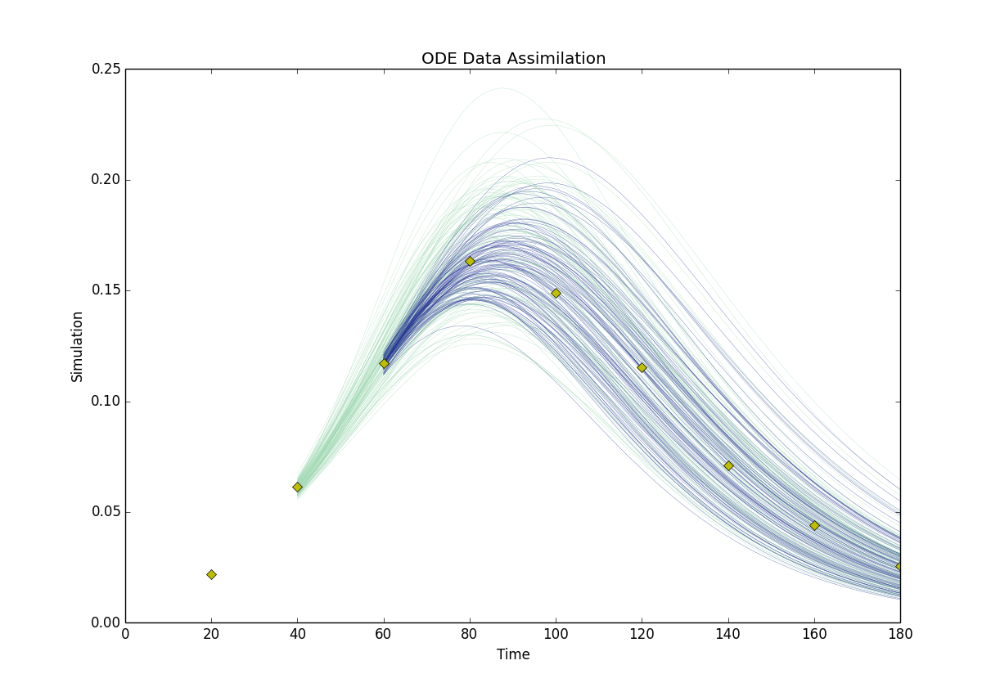

pyda is very easy to install!
pyda is hosted on github and pypi.
You should already have python 2.7, or something compatible, along with numpy and matplotlib.
Download the files from github to a directory of your choice. Alternatively grab the tar.gz from pypi and unpack it. Then, from the directory containing pyda’s setup.py, run:
> python setup.py install
Now you can use:
import pyda
in your python scripts!
The first exampe included with the package performs data assimilation using an ensemble Kalman filter (enKF) strategy for an ordinary differential equation S-I-R epidemic model. This can be run by changing to the ./examples directory and executing:
> python SIR_enkf2horizon.py
This should fill the directory with a bunch of files (./ensemble.*.dat, analysis.*.dat, and param.*.dat) from the data assimilation process. A visualization of these can be seen by running:
> python plotSIR_enkf.py
This should produce
You can change which part of the data assimilation process you plot by editing the file numbers in the following lines of plotSIR_enkf.py:
# Filename of Ensemble to plot
EnsembleFileName = "./ensemble.2.dat"
# Filename of Analysis Ensemble to plot
AnalysisFileName = "./analysis.2.dat"
You can see a different view by changing the line:
DA_vis.ode_DA_vis2(SimDim,DataFileName,EnsembleFileName,AnalysisFileName)
to:
DA_vis.ode_DA_vis1(SimDim,DataFileName,EnsembleFileName,AnalysisFileName)
in plotSIR_enkf.py.
If you desire more details/control over plotting the place to start looking is the file AssimilationVis.py in the ./pyda/utilities/ directory.
To interpret the output a little explanation is in order.
The simulation is a Runge-Kutta solve on the SIR epidemic system
Data is generated from this simulation for a set \((S_0^*,I_0^*,\beta^*, \gamma^*)\). This simulation is sampled intermittently and Gaussian noise is added to the samples.
An ensemble of SIR solutions is then generated by taking many samples of initialiations/parametrizations around \((S_0^*,I_0^*,\beta^*, \gamma^*)\) and running the simulation up until the next data point. The data point is then used in an enKF to generate the adjusted analysis ensemble. After that the simulation resumes. After each step the ensemble and analysis is propagated to an arbitrary time horizon to make a forecast. This is what is shown in the figure.
{kind=link}